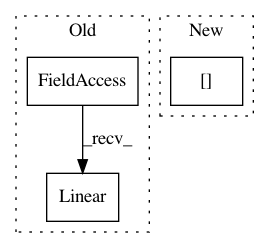

337d9891a15057a4609ede736d527037274bf8c4,model.py,CNNPolicy,__init__,#CNNPolicy#Any#Any#,20
Before Change
self.ab_fc2 = AddBias(1)
num_outputs = action_space.n
self.actor_linear = nn.Linear(512, num_outputs, bias=False)
self.ab_fc3 = AddBias(num_outputs)
self.apply(weights_init)
After Change
num_outputs = action_space.n
self.dist = Categorical(512, num_outputs)
elif action_space.__class__.__name__ == "Box":
num_outputs = action_space.shape[0]
self.dist = DiagGaussian(512, num_outputs)
else:
raise NotImplementedError
In pattern: SUPERPATTERN
Frequency: 3
Non-data size: 3
Instances
Project Name: ikostrikov/pytorch-a2c-ppo-acktr
Commit Name: 337d9891a15057a4609ede736d527037274bf8c4
Time: 2017-10-13
Author: ikostrikov@gmail.com
File Name: model.py
Class Name: CNNPolicy
Method Name: __init__
Project Name: lcswillems/torch-rl
Commit Name: 3990b91c4ba6caffcb06d36303aef2d2908a6648
Time: 2018-05-09
Author: lcswillems@gmail.com
File Name: models/img_instr_mem.py
Class Name: ACModel
Method Name: __init__
Project Name: dpressel/mead-baseline
Commit Name: 3bc0a1906529329f57c749f6a175eca4b7907a96
Time: 2018-05-30
Author: dpressel@gmail.com
File Name: python/baseline/pytorch/classify/model.py
Class Name: NBowBase
Method Name: _init_stacked